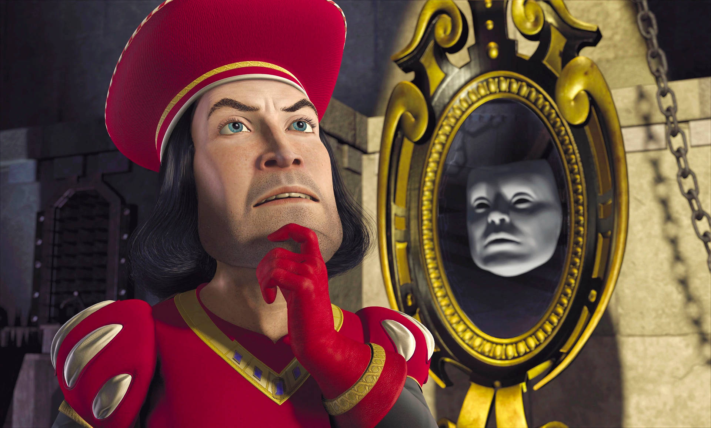
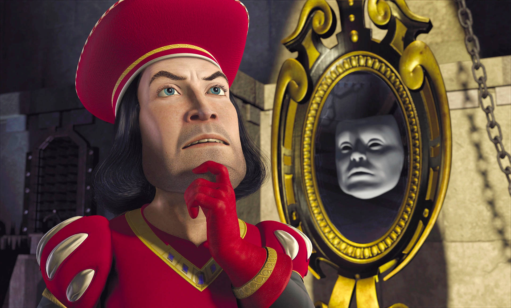
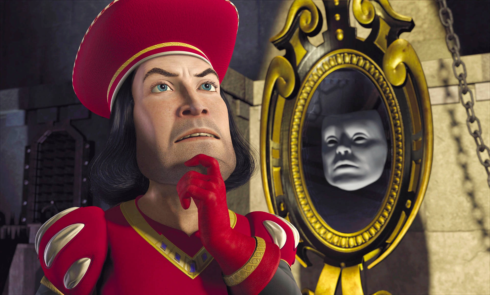
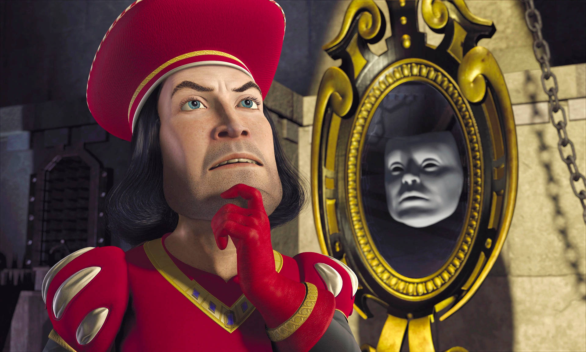

Shrek, a grumpy and self-centered green ogre, has always relished his quiet life in a secluded swamp. However, this peace is shattered when a horde of fairy-tale creatures, including Pinocchio, the Three Little Pigs, and Donkey, are ordered to invade his home by the obsessive Lord Farquaad, who despises all things fairy-tale. In a bid to reclaim his privacy, Shrek embarks on a journey to confront Farquaad, with his enthusiastic new friend Donkey accompanying him along the way. Meanwhile, Lord Farquaad is seen torturing the Gingerbread Man to extract information about the remaining fairy-tale beings until he finally obtains the Magic Mirror. The Mirror reveals that Farquaad can become a real king only if he marries a princess. Deliberating, Farquaad is presented with three choices — Cinderella, Snow White, and Princess Fiona. He quickly settles on Fiona but silences the Mirror before it can mention the critical detail of her nightly transformation When Shrek and Donkey arrive at the grand palace of Duloc, they stumble upon a tournament to win the chance to rescue Fiona from a castle encircled by lava and guarded by a fierce dragon. Displaying his cunning with a flair reminiscent of a wrestling match, Shrek triumphs over the knights and convinces Farquaad to release the fairy-tale creatures from his swamp in exchange for rescuing Fiona. Their adventure leads them to the castle, where Shrek and Donkey opt to split up in their search for Fiona. Donkey, ever the charmer, engages the dragon and learns that she has a soft spot for him, leading to a visit to her chambers. Upon meeting Fiona, Shrek soon discovers she is not pleased with his lack of romantic gestures. As they make their escape, Shrek inadvertently saves Donkey from the dragon’s clutches, igniting the dragon’s wrath and causing a chaotic chase out of the castle. Initially thrilled with her rescue, Fiona’s excitement wanes when she sees Shrek’s true form. Nevertheless, as they journey back to Duloc, Shrek and Fiona begin to find common ground, ultimately developing feelings for one another. However, Fiona chooses to sleep apart in a nearby cave, prompting a heartfelt conversation between Shrek and Donkey about loneliness and judgment. He reveals to Donkey that he plans to isolate himself further by building a tall wall around his home to shield himself from the world’s cruel scrutiny. The plot thickens when Fiona inadvertently reveals her secret to Donkey: she transforms into an ogress each night due to a curse that can only be broken by true love’s kiss. Shrek, eavesdropping, misinterprets her remarks as a rejection of him, which deepens his anguish. Following this, Shrek mistakenly brings Lord Farquaad to Fiona, leading to an emotionally charged confrontation that ultimately results in Shrek retreating to his swamp alone. In the depths of his solitude, Shrek realizes that he longs for Fiona. When Donkey appears, furious with Shrek for leaving, he reveals that Fiona’s marriage to Farquaad is imminent, urging Shrek to act fast. With the aid of Dragon, who has escaped her confines, they speed towards Duloc to prevent the wedding. Just in time, the duo crashes the ceremony, and chaos ensues when Fiona transforms into an ogress in front of the stunned guests. Farquaad, horrified, orders Shrek’s death and Fiona’s imprisonment, but Shrek calls upon Dragon, who confronts Farquaad. In the ensuing uproar, Shrek and Fiona express their true feelings for one another, sealing their love with a kiss that breaks her curse. However, Fiona remains an ogress and is surprised, believing she was meant to become stunningly beautiful. Shrek, however, lovingly reassures her that she is indeed beautiful. Ultimately, they celebrate their love with a whimsical wedding in the heart of the swamp, embarking on their honeymoon as the enchanted celebration unfolds with everyone joyfully singing “I’m a Believer.”